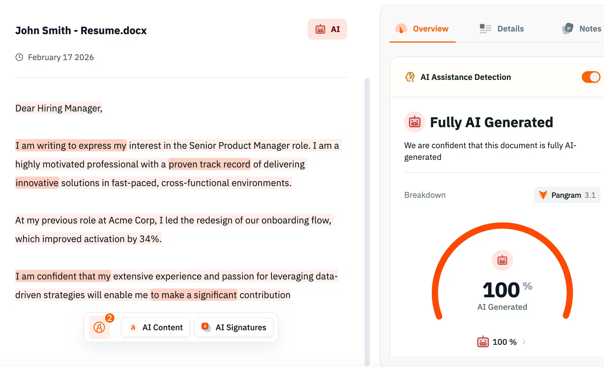

KI-Erkennung für Personalteams
KI-Detektor für Personalvermittler und Personalverantwortliche
Optimieren Sie Ihren Einstellungsprozess, indem Sie mühelos KI-Spam herausfiltern. Identifizieren Sie echte Bewerber, überprüfen Sie Anschreiben und sichten Sie Lebensläufe mit einer Genauigkeit von 99,98 % und SOC 2 Typ 2-Sicherheit.

e Marken vertrauen uns


Anwendungsfälle
Filtere den Lärm heraus.
Finde die Talente.
Von KI generierte Bewerbungen überschwemmen die Rekrutierungsprozesse. Unterscheiden Sie echte Bewerber von automatisierten Massenbewerbungen mit der präzisesten KI-Erkennungsengine.

„Spam“-Anwendungen erkennen
Bewerber nutzen KI-Bots, um massenhaft Bewerbungen zu verschicken. Erkennen Sie sofort KI-generierte Anschreiben und Lebensläufe, denen es an echter Absicht oder Mühe mangelt.

Kommunikationsfähigkeiten überprüfen
Stellen Sie niemanden aufgrund eines ChatGPT-Skripts ein. Achten Sie darauf, dass die Schreibprobe oder die Hausaufgabe die tatsächlichen Kommunikationsfähigkeiten des Bewerbers widerspiegelt.

Faire und unvoreingenommene Überprüfung
Vermeiden Sie Vorurteile gegenüber Nicht-Muttersprachlern. Pangram erkennt KI anhand der sprachlichen Syntax und nicht nur anhand der Perplexität, wodurch eine faire Bewertung für vielfältige Talentpools gewährleistet wird.
Technischer Ansatz
Unterscheiden Sie zwischen „überarbeiteten“
und „generierten“
Personalverantwortliche müssen differenziert vorgehen. Ein Bewerber, der KI zur Rechtschreibprüfung seines Lebenslaufs nutzt, ist etwas anderes als einer, der KI einsetzt, um ein Anschreiben von Grund auf neu zu verfassen. Pangram erkennt den Unterschied.

Erkennung gemischter Inhalte
Nicht jeder Einsatz von KI ist ein Warnsignal. Unsere farblich gekennzeichneten Markierungen zeigen genau, welche Teile von KI generiert und welche von Menschen verfasst wurden. So können Sie Kandidaten erkennen, die KI verantwortungsbewusst zur Korrektur der Grammatik einsetzen, im Gegensatz zu denen, die die gesamte Arbeit auslagern.
Lebenslauf & Anschreiben – Hintergrund
Herkömmliche Erkennungssysteme versagen bei strukturierten Dokumenten. Das Modell von Pangram unterscheidet zwischen der üblichen Formatierung von Lebensläufen und von KI generiertem narrativem Text.
Google Docs & Browser-Erweiterung
Unsere Browser-Erweiterung bietet eine schnelle und bequeme Möglichkeit, unser KI-Erkennungstool beim Surfen im Internet oder in webbasierten Anwendungen wie Google Docs zu nutzen.
Integration
Nahtlose Integration von „
“ in Ihre Rekrutierungsplattform

01
Browser-Erweiterung„
“ für LinkedIn und das Internet
Die Personalbeschaffung erfolgt im Browser. Nutzen Sie die Browser-Erweiterung, um LinkedIn-Profile, Nachrichten und webbasierte ATS-Posteingänge zu durchsuchen, ohne zwischen den Registerkarten wechseln zu müssen.
Erweiterung herunterladen →
02
API für ATS
Integrieren Sie das System über unser Python-SDK oder unsere API in Ihr ATS. Versehen Sie eingehende Bewerbungen automatisch mit einem „AI Likelihood Score“, um Ihre Warteschlange zu priorisieren.
API-Dokumentation anzeigen →
03
Dateien im Stapelverfahren hochladen
Laden Sie ZIP-Dateien mit Lebensläufen oder Anschreiben direkt in das Dashboard hoch. Prüfen Sie Dutzende von Bewerbungen auf einmal, um generische KI-Ergebnisse von menschlichen Beiträgen zu unterscheiden.
Probieren Sie das Dashboard aus →
Häufig gestellte Fragen
Häufig gestellte Fragen zur KI-Erkennung
Häufige Fragen zur KI-Erkennung für Personalvermittler
und Einstellungsteams.
Mehr entdecken
KI-Erkennung für
jedes Unternehmens
Für Entwickler
KI-Code-Erkennung für Entwickler und Technikteams. Erkennen Sie von ChatGPT, Copilot und Claude generierten KI-Code in Python, Java, C++ und weiteren Sprachen.
Mehr erfahren →Zur Moderation von Inhalten
KI-gestützte Inhaltsmoderation für Teams im Bereich Vertrauen und Sicherheit. Erkennen Sie KI-generierte Bewertungen, gefälschte Kommentare und synthetische Inhalte in großem Umfang über eine API.
Mehr erfahren →Für Anwaltskanzleien
KI-Erkennung für Anwaltskanzleien und Juristen. Erkennen Sie KI-generierte Schriftsätze, überprüfen Sie Rechtszitate und stellen Sie bei jeder Einreichung die echte Urheberschaft sicher.
Mehr erfahren →Die Bildschirmaufzeichnung wird fortgesetzt. Finden Sie echte Talente.
Filtern Sie KI-generierte Bewerbungen, überprüfen Sie die Echtheit der Bewerber und optimieren Sie Ihren Einstellungsprozess mit einer Genauigkeit von 99,98 %.